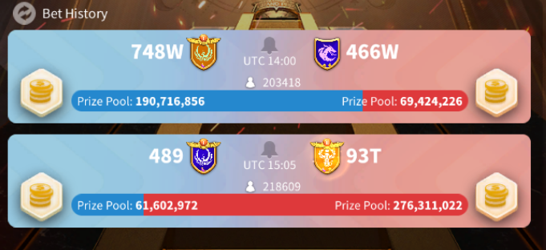

These projects mainly embody two key interests of mine: Data Science and Cyber security. I have other projects that I have completed during my internships, but due to that work not being mine, I felt it best I only discuss what I can in an interview or on request.
Areas of Knowledge: Rust, ARM assembly, Drivers, Memory Management
Tools Used: Rust, ARM Assembly, Cargo for Rust compilation, Git
Project Cause: Due to my interest in operating systems and cyber security, I thought it would be interesting for me to see what OSes are doing under the hood that you may not think about. I also came across an interesting project doing this already and thought it may be an interesting way to learn Rust properly.
I am hoping to implement a secure-by-design philosophy when coding this OS. It currently offers a source of text output via HDMA from the Raspberry Pi Zero 2W.
It has a basic boot up system and I am currently working on making use of the network card so that I can wirelessly debug using Putty without needed to have such a painful way of looking at the output. When that is done, I hope to implement a file system so that I can develop portable code which is my main focus.
Areas of Knowledge: Encryption, Networking, C, Making protocols, Windows OS Internals
Tools Used: C, Windows API, Python
Project Cause: As my families only computer scientist, I often have people ask me to help them with issues they are having. Whilst there exists remote access software already, I thought it may be interesting to allow myself to implement one myself.
This project allows me to access family member's windows computers to try to help them to indentify and remedy problems. Ranging from Grandparents who aren't that familiar with tech, to a younger brother who is wrapping his head around a PC for gaming, it is a piece of software that has real use for me personally.
I have so far implemented by own protocol, in which two devices connect over socket, using Diffie Helman Ephemeral key exchange to generate a session key to enrypt communications with AES 256 for security.
The helper makes use of a python script, where they can use GUI or command line to control the helpee's computer which has an executable in C. Currently, the GUI use is a little bit slow so I would like to do some more work on that and implement a way of transferring files.
Areas of Knowledge: Python, Data Science, Web scraping, GUI scraping
Tools Used: Python, Logistic regression, Kelly's Criterion, Excel for data storage, Python scraping libraries
Project Cause: Having began to study statistics in my foundation year, I decided I would like to apply some of the ideas to drive decision making whilst being in an environment where if it fails, I wouldn't be too upset.
The "financial" system works as follows: players can complete tasks to receive a small amount of coins. These coins can then be bet on the afforementioned competitions. The odds are player set: you choose which team it is that you think will win and then the money bet on the losers is distributed amongst the winners depending on their bet. Furthermore, whilst the entire amount bet on the losers is distributed, the losers receive half of their bet back.
Having very briefly came across the premise of logistic regression in some reading, I decided it would be interesting if I tried to make use of it when coupled with some statistics knowledge. I began by making two different methods for getting data:

A visual of a ROK Osiris league GUI
Once I had the mechanisms in place to gather and clean data, I began to generate a 6 dimension regression model. It would output a probability that a team wins given their team age, power, kills, players, previous wins and the ratio of bets on the given team compared to their opponent. The last attribute allowed me to capture the feeling of the market which was often fairly effective as a predictor.
With the model trained, the GUI scraper would then gather these attributes before a game began and would then calculate the probability a team wins. Finally, Kelly's criterion was applied as a method of balancing the probability of victory and the output if winning to optimise bets. It would then consider all of my possible bets and spread the size of the bets according to these statistics.
This gave a ROI of 30% over the market average (though this is unsurprising as most of the market was dictated by personal emotion or guessing rather than other data scientists)
Areas of Knowledge: Data Science, Bayesian Classification
Tools Used: Python, numpy, matplotlib, wordcloud, pandas
Project Cause: As part of coursework for my data science module
Imported a dataset of 5500 pre-classified emails. I then made use of this to generate probabilities that an email is spam given it includes each of the words. By using this, approach, I could predict whether an email is spam or not with an accuracy of 98.3% on the testing data set.
It also gave very good results when tested on my own gmail inbox, with few mistakes of classifying non-spam for spam.
Areas of Knowledge: Data Science, Neural Networks
Tools Used: Python
Project Cause: Having saw this classic project, I figured I would give it a go.
Working on the usual MNIST database, I developed a guided solution using 2 layer neural networks capable of taking in a 28x28 image with a number in it and then would decide what digit was in this image.